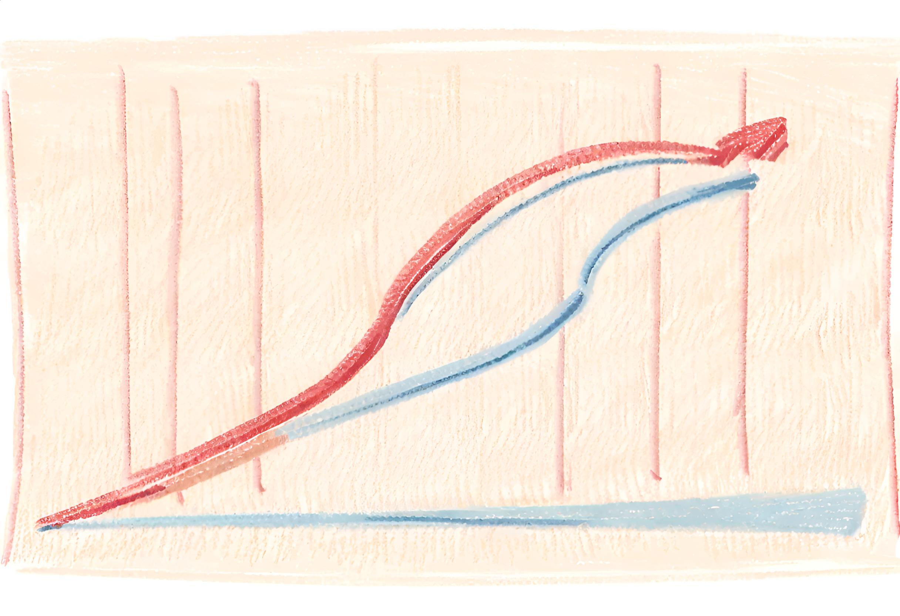

Exploratory data analysis helps you to understand the data
Overview
Great, now that we have a better understanding of the available dataset, we can start to do some exploratory data analysis.
The purpose of this exploratory phase is to gain insights into the structure, distribution, and characteristics of the data before applying more complex statistical or machine learning techniques. Understanding the data will help to inform our analytic approach to answer our key research questions. As a reminder, they are:
What is the relationship between smoking during pregnancy and a child’s birthweight?
Can maternal factors measured during pregnancy be used to accurately predict infants at risk of low birthweight?
In this section we will use statistical summaries and data visualisation to get a feel for our birthweight dataset.

Created using Stable Diffusion — human + AI.
Statistical summaries
Let’s start by printing a table of the univariate distribution of each variable.
For dichotomous variables like Low Birthweight, we can see that 59 children (or 39%) were born with low birthweight
For continuous variables like Age, we can see that the average maternal age was 23 years and the interquartile range was 19 to 26 years (i.e. 25% of mothers were 19 years or younger and 25% were 26 years and older)
For categorical variables like Race, we can see that 96 mothers (or 51% of the total) were White, 26 mothers were Black (14%) and 67 mothers were categorised as “Other” (35%).
Code
library(gtsummary) # load library for making nice tables# Print the tabletbl_summary(birthwt_clean, label = varLabels)
Characteristic
N = 1891
Low birthweight
59 (31%)
Age
23 (19, 26)
Weight at last menstrual period (lbs)
121 (110, 140)
Race
White
96 (51%)
Black
26 (14%)
Other
67 (35%)
Smoking during pregnancy
Non-smoker
115 (61%)
Smoker
74 (39%)
Previous premature labours
0
159 (84%)
1
24 (13%)
2
5 (2.6%)
3
1 (0.5%)
History of hypertension
12 (6.3%)
Uterine irritability
28 (15%)
Physician visits during first trimester
0
100 (53%)
1
47 (25%)
2
30 (16%)
3
7 (3.7%)
4
4 (2.1%)
6
1 (0.5%)
Birthweight (g)
2,977 (2,414, 3,487)
1 n (%); Median (IQR)
Because we are interested in comparing children by their birthweight, we can look at a second table that compares children who were and were not born with low birthweight.
Some distinct differences for low birthweight children are starting to emerge. For example:
Mothers of low birthweight children were more likely to be smokers (51%) compared to non-smokers (34%).
Mothers of low birthweight children were more likely to have a history of hypertension (12% among low birthweight children compared to 3.8% among non-low birthweight children)
Studying Health Data Science at UNSW Sydney
Being able to summarise statistical information is a foundation skill for a health data scientist. The course HDAT9200 Statistical Foundations for Health Data Science provides a solid understanding of the principles of statistics using the R programming language.
You will learn to write clear, efficient and correct computer code in the course HDAT9300 Computing for Health Data Science, which uses the Python programming language.
Data visualisation
Above we confirmed that babies born to mums who smoked during pregnancy had lower average birthweight compared to those that did not smoke. Let’s use data visualisation to compare the full distribution of birthweights by maternal smoking status. Remember, you can click the Code icon to reveal the underlying R code that creates this chart.
This type of chart is called a grouped boxplot. These plots are good for quickly comparing the distribution of a numerical variable across two of more categorical variables. In this case, we can compare the distribution of birthweight for babies of smoking mums and non-smoking mums.
The dark horizontal line at the centre of the box indicates the median birthweight for each group. The upper and lower borders of the boxes indicate the 25th and 75th quartiles and the vertical spikes emerging at either end indicate the full range of the data.
We can see that babies born to non-smoking mums are heavier on average compared to babies born to smoking mums, although there is a lot of overlap in the distributions.
Below is a visualisation of the same data using a density plot. If you compare the code for this plot to the previous one, you will see that very little has changed. This is the power of the ggplot package: one consistent framework can produce many different types of graphs!
Code
library(ggplot2) # Tools for visualising databirthwt_clean |>ggplot(aes(x = bwt, fill = smoke, color = smoke)) +geom_density(alpha=0.8) +scale_x_continuous("Birthweight") +scale_y_continuous("Density") +scale_color_manual("Smoking status", values =c('#03d77f', '#fb706a')) +scale_fill_manual("Smoking status", values =lighten(c('#03d77f', '#fb706a'), 0.4)) +labs(title="Birthweight by maternal smoking status") +theme_minimal() +theme(legend.position ='top')
Both plots above illustrate the same message, babies born to mums who smoked during pregnancy have a lower birthweight on average, compared to babies of non-smokers, although there is a lot of overlap for both groups.
Test your understanding
Test your understanding by answering these questions based on the tables and figures above.
Fill in the blank Among the 59 children born with low birthweight, % had mothers who smoked during pregnancy.
True or False Children born to mothers who smoked during pregnancy always have lower birthweight than children born to mothers who did not smoke?


 Back to the main menu
Back to the main menu